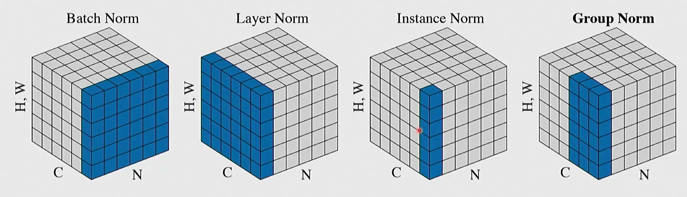
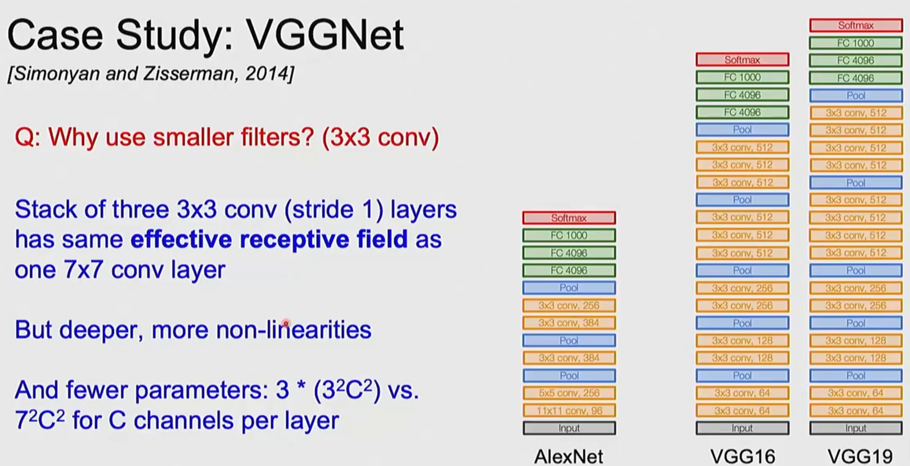
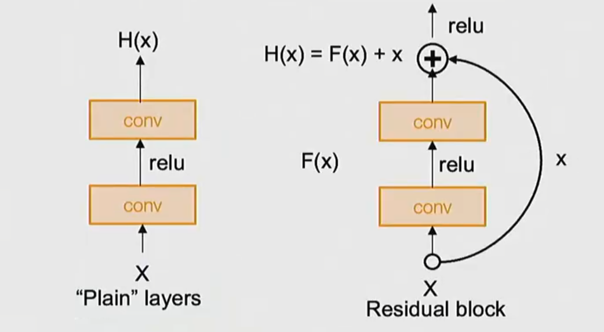

Recap: Layers that CNN is comprosed of
Convolutional Layer:
input size: ，其中为图像尺寸，为channel数(如RGB)
filters size: 可以理解为有d’个filter, 每个filter会把尺寸、channel数为的输入图像映射为一个标量(affine map: linear projection + bias)。filters在的图像上滑动，在每个位置输出一个属于的向量
output size: ，一般会再过一个ReLu或者其他非线性激活函数
Pooling Layer
max-pooling, avg pooling, random pooling, etc.
main idea is consolidation.
FFN Layer:
affine map + activation func
Normalization Layer
其中 都是向量是可训参数，是从中计算出的均值与标准差
不同Norm实现的基本逻辑是一致的，不同的只是如何从输入切分选取subset来构成每个

这里是CNN架构中一些Norm，C为channel, 是图片尺寸
Dropout
本质上是正则化Regularization，方法是在训练的过程中随机将一些神经元的输出置为0，以迫使模型学习到更多特征，在test data和generalization上表现更好。
需要注意，真正推理的时候不需要mask，因此要把每个神经元的输出的数值乘以训练时输出not dropout的概率，否则每个层就都会有成比例超量的输出数值
经典CNN Architecture

ResNet: Residual Connection
这是一个改进

如果没有ResNet，那么多层的神经网络是难以优化的，现象为56层的CNN在测试数据和训练数据上的损失都高于20层。这是无法optimize参数导致的。
通过加入Res连接，模型可以直接跳过中间的某些层，获得至少不低于更简单模型的优化表现。(To do at least as well as shallow models)
Weight Init
一般是随机初始化，期望为0，但是要调整方差
这是为了防止一开始的前传过程中，数值以指数级别越来越大或者越来越小
对于一般的Linear Layer，可以将数值乘以，以获得前传过程中的数值稳定性(Kaiming initialization)
浮点数太大或太小都会影响精度
Training CNN
- 数据处理：例如将各个channel归一化（减去均值再除以标准差）
- 数据增强：例如镜像、拉伸、翻转、调整明度/对比度等、增加噪音等
随机放缩裁剪：将原始图片随机放缩，然后从中裁剪出尺寸一致的图片(但物体在图片中的大小出现变化)
随机cutout：在图片中随机cover色块 - 超参选择：

前两步是保证模型和代码本身没有问题
然后通过测试找到一些比较合理的学习率
然后再调整其他超参 - 迁移学习：在小数据集上，基于已有模型，进行迁移学习。
譬如冻结除了最后FFN层的参数，然后在自己的数据集上重新设计并训练最后一层的参数(如生成自己的classification分布)
如果有更多的数据，可以用现有模型的参数初始化，然后不冻结参数，直接在自己的数据集上训练
一般而言，迁移的数据集与预训练数据集差异越小、迁移数据集数据量越大，迁移学习效果越好